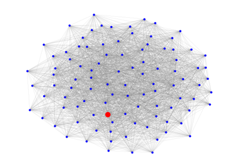
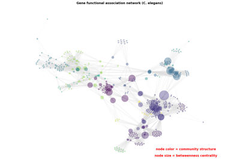
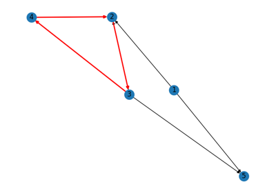
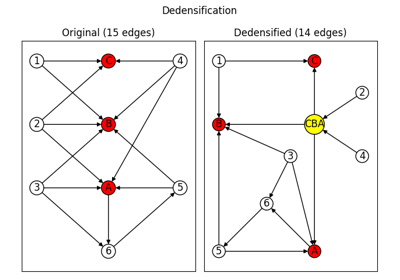
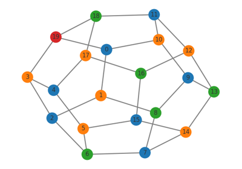
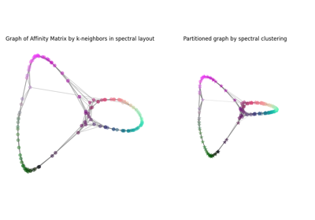
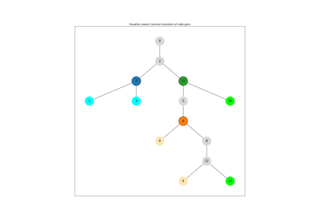
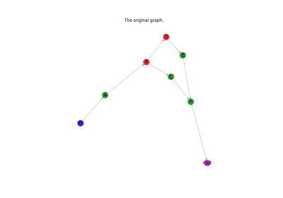

Algorithms#

Beam Search

Betweenness Centrality



Cycle Detection


Dedensification


Greedy Coloring

Image Segmentation via Spectral Graph Partitioning
Image Segmentation via Spectral Graph Partitioning



Lowest Common Ancestors



Subgraphs